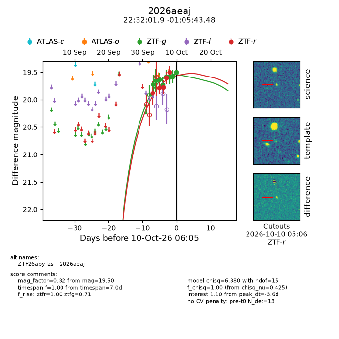
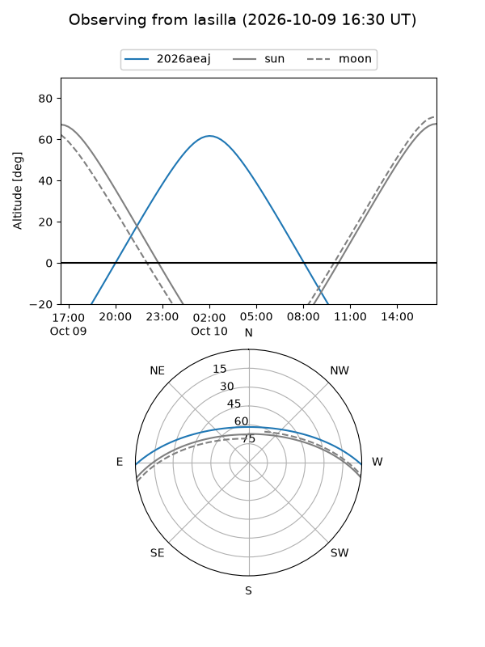
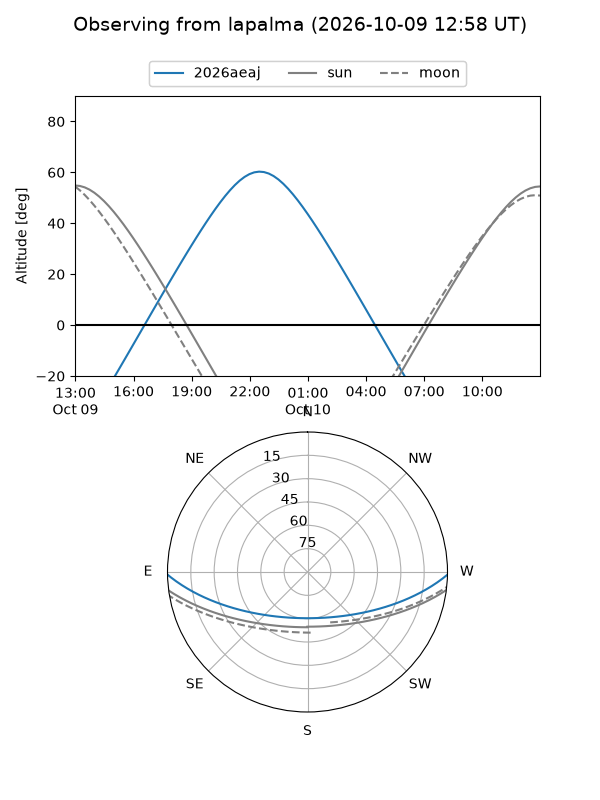
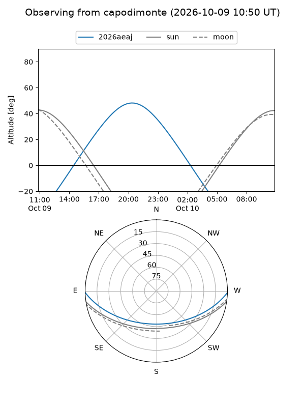
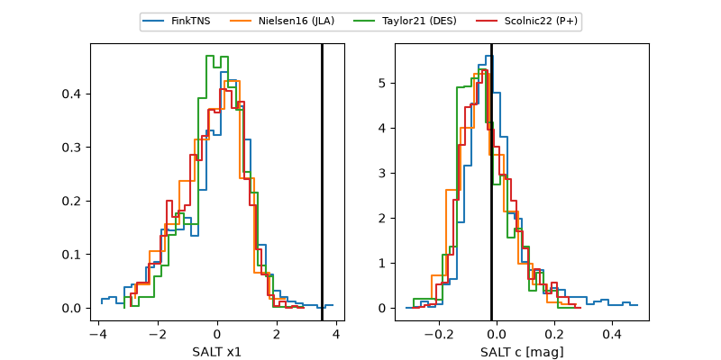

2026aeaj
Target 2026aeaj at 2026-10-10 06:06
Aliases and brokers:
FINK-ZTF: ztf.fink-portal.org/ZTF26abyllzs
Lasair-ZTF: lasair-ztf.lsst.ac.uk/objects/ZTF26abyllzs
ALeRCE-ZTF: alerce.online/object/ZTF26abyllzs
YSE-PZ: ziggy.ucolick.org/yse/transient_detail/2026aeaj
TNS name: wis-tns.org/object/2026aeaj
Direct TNS query: direct search
alt names
ZTF26abyllzs (ztf,fink_ztf)
2026aeaj (tns,yse)
Coordinates:
equatorial (ra, dec) = 338.0077,-1.09541
equatorial (HMS+DMS) = 22:32:01.85,-01:05:43.48
galactic (l, b) = (64.9387,-47.64099)
Flags:
peak dt: -3.6
Photometry:
last ztfg=19.50, ztfr=19.49
8 ztfg, 5 ztfr detections
Lightcurve

Visibility



Additional plots
